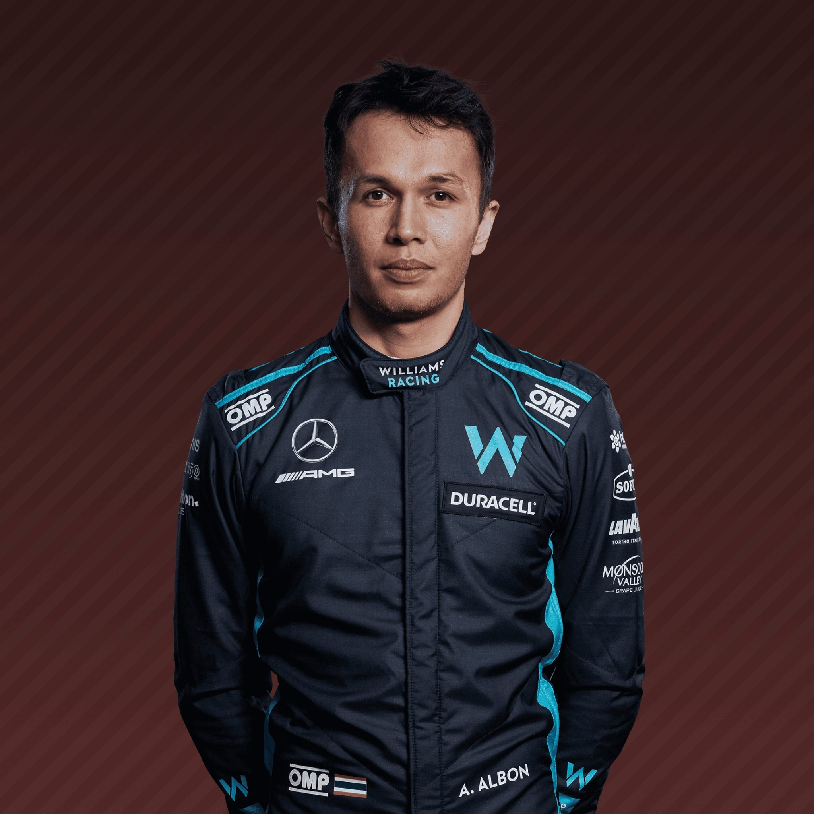
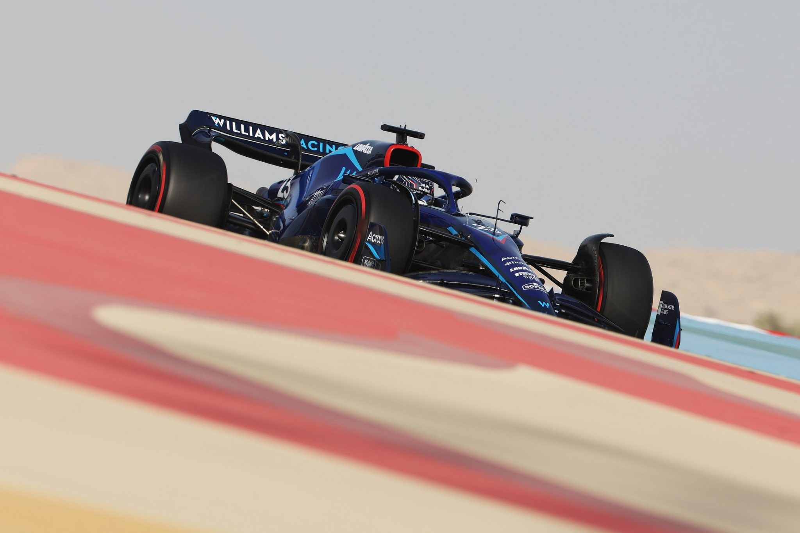
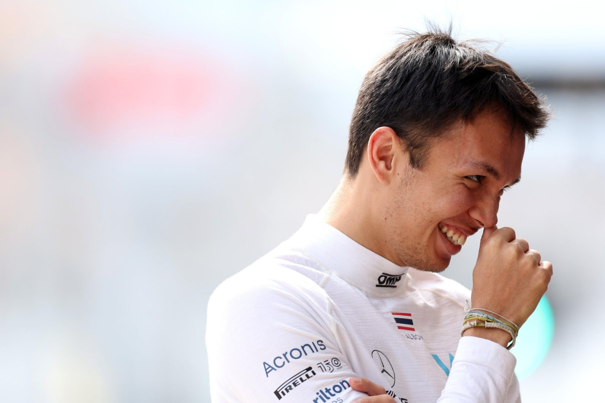
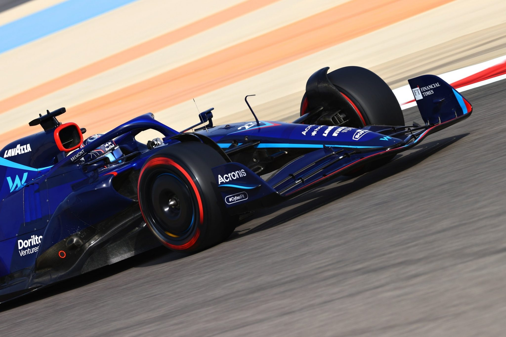
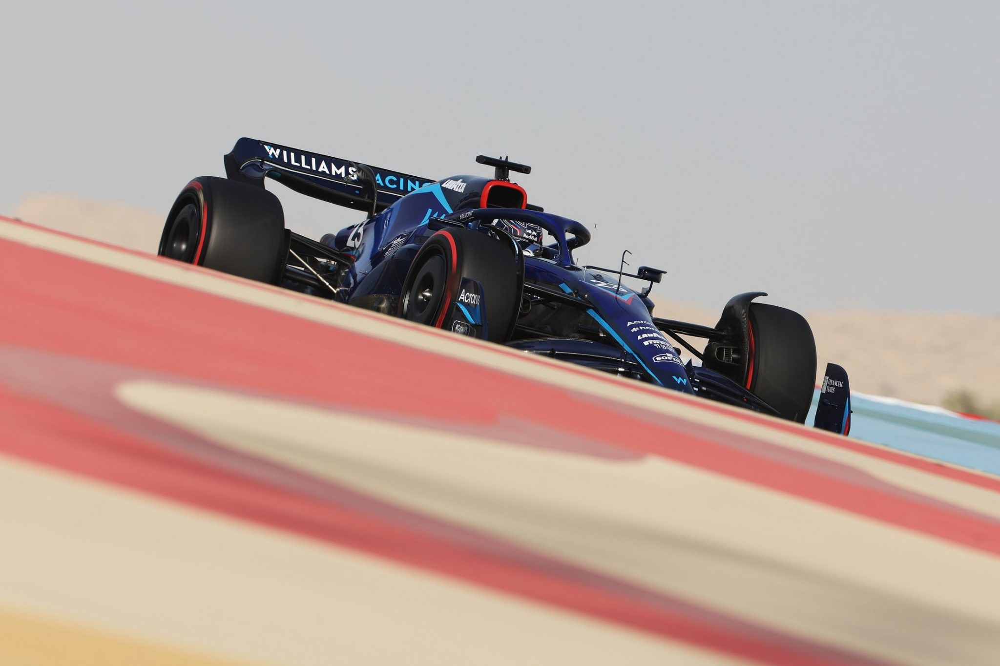
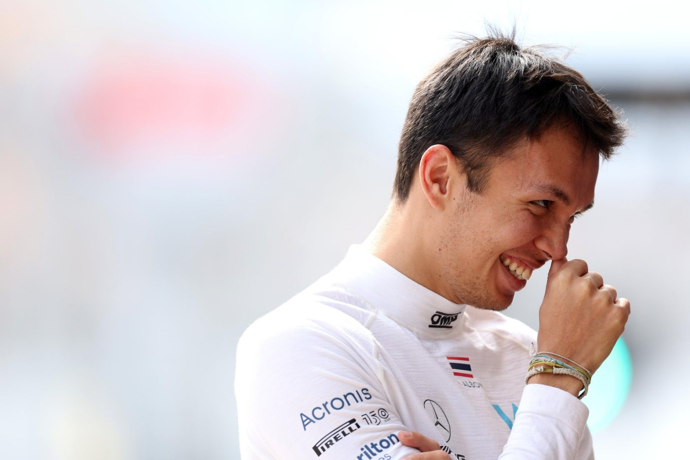
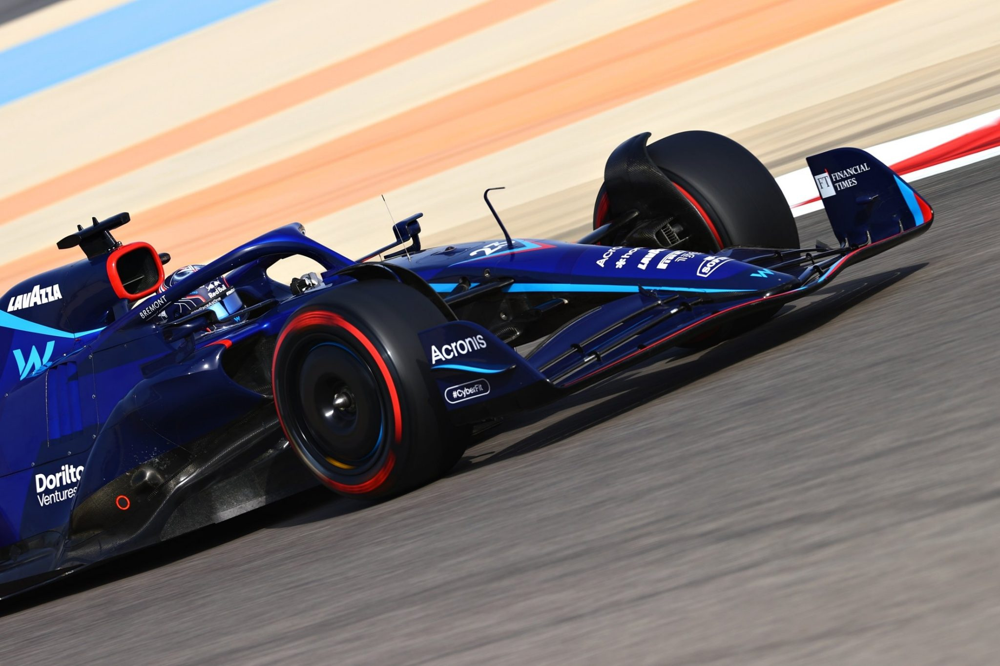

Born in London but racing under the flag of Thailand,
Alexander Albon’s first word was in fact Italian. That word was Ferrari – though it was with another Italian team that he got his big F1 break.
Idolising Michael Schumacher and dreaming of one day racing in Formula 1,
the junior Albon was pipped to the 2016 GP3 title by a certain Charles Leclerc.
He then left his great friendship with George Russell trackside as he took the 2018 Formula 2 title fight down to the wire.
Graduating to the F1 big league along with yet another contemporary – Lando Norris – in 2019,
Albon did his talking on track with Toro Rosso in the opening races, earning a mid-season promotion to Red Bull Racing.
A stylish over-taker with a championship mentality, Albon was unfazed by partnering Max Verstappen for the second half of his rookie season,
aking top-six finishes in eight of his nine 2019 races with Red Bull.
Staying in touch with the future champion proved tougher in 2020 and Red Bull dropped him from their race line-up.
Crucially, though, Albon was retained as test and reserve driver, keeping him very much on team bosses’ radar,
leading to his 2022 return to the grid with Williams.
Laidback and cheerful with a cheeky grin, the Thai racer is popular among his peers – not always easy in motorsport’s cauldron of competition
but you don’t succeed in Formula 1 by being popular. Albon’s challenge now is a big one
to make the most of a rare second F1 opportunity.
  
| Team | Williams |
|---|---|
| Country | Thailand |
| Podiums | 2 |
| Points | 201 |
| Grand Prix entered | 57 |
| World Championships | N/A |
| Highest race finish | 3 (x2) |
| Highest grid position | 4 |
| Date of birth | 23/03/1996 |
| Place of birth | London, England |
Biography
Born in London but racing under the flag of Thailand,
Alexander Albon’s first word was in fact Italian. That word was Ferrari – though it was with another Italian team that he got his big F1 break.
Idolising Michael Schumacher and dreaming of one day racing in Formula 1,
the junior Albon was pipped to the 2016 GP3 title by a certain Charles Leclerc.
He then left his great friendship with George Russell trackside as he took the 2018 Formula 2 title fight down to the wire.
Graduating to the F1 big league along with yet another contemporary – Lando Norris – in 2019,
Albon did his talking on track with Toro Rosso in the opening races, earning a mid-season promotion to Red Bull Racing.
A stylish over-taker with a championship mentality, Albon was unfazed by partnering Max Verstappen for the second half of his rookie season,
aking top-six finishes in eight of his nine 2019 races with Red Bull.
Staying in touch with the future champion proved tougher in 2020 and Red Bull dropped him from their race line-up.
Crucially, though, Albon was retained as test and reserve driver, keeping him very much on team bosses’ radar,
leading to his 2022 return to the grid with Williams.
Laidback and cheerful with a cheeky grin, the Thai racer is popular among his peers – not always easy in motorsport’s cauldron of competition
but you don’t succeed in Formula 1 by being popular. Albon’s challenge now is a big one
to make the most of a rare second F1 opportunity.
Gallery
  